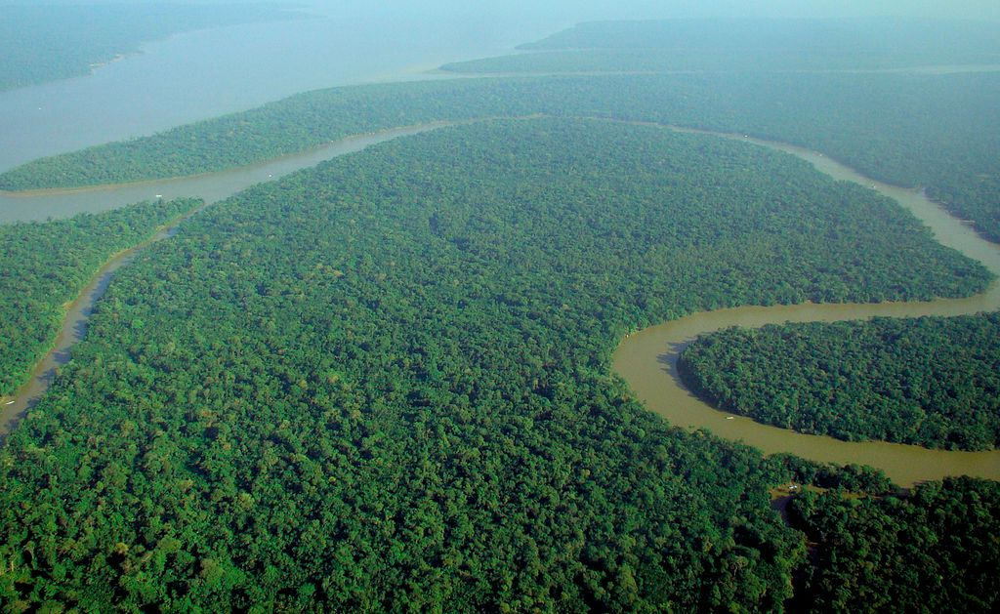

This is Forest wikipedia content
A forest is an ecosystem characterized by a dense community of trees.[2] Hundreds of definitions of forest are used throughout the world, incorporating factors such as tree density, tree height, land use, legal standing, and ecological function.[3][4][5] The United Nations' Food and Agriculture Organization (FAO) defines a forest as, "Land spanning more than 0.5 hectares with trees higher than 5 meters and a canopy cover of more than 10 percent, or trees able to reach these thresholds in situ. It does not include land that is predominantly under agricultural or urban use."[6] Using this definitionsome qoutation of forest:
Global Forest Resources Assessment 2020TheWHOwas the founder in 1948
above content is the abbreviation of the world health org
Addressing format
ABC/102 ,xyz Road,
Visit us at,
abc@gmail.com.
USA
Brower usually displays cite in italic
The ForestBy plant community
Browser supports bi-directionl override if it supports,it will convert it in right to left (rtl)
This is written in right to left